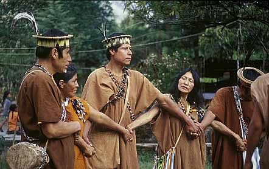
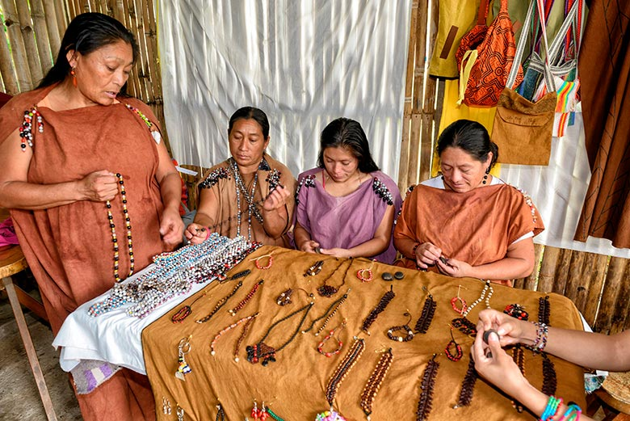

Costumbres
Las costumbres de la comunidad Yanesha reflejan una profunda conexión con la naturaleza y un fuerte sentido de vida comunitaria. Desde el respeto hacia los ríos y montañas hasta los rituales agrícolas, cada práctica tiene un significado cultural y espiritual. La pesca, la caza y la agricultura en chacras son actividades que no solo garantizan la subsistencia, sino que también refuerzan la unión familiar y comunitaria.
Actividades tradicionales
Los Yanesha desarrollan actividades como la elaboración de artesanías, tejidos y cerámicas que representan su cosmovisión. Las danzas y cantos tradicionales se realizan en ceremonias importantes, acompañados de instrumentos musicales propios. Asimismo, la medicina tradicional ocupa un lugar esencial: los sabios y sabias de la comunidad conservan el conocimiento de plantas curativas, transmitido de generación en generación.
Mitos y leyendas
La tradición oral Yanesha está llena de mitos y leyendas que explican el origen de los animales, los ríos y los astros. Estas historias se transmiten en las noches alrededor del fuego y cumplen una función educativa, ya que enseñan valores como el respeto a la naturaleza, la solidaridad y el equilibrio en la vida comunitaria.
Cosmovisión
Los Yanesha conciben el universo dividido en tres mundos:
- Mundo de arriba: Hogar de los dioses y abuelos, quienes observan a los humanos.
- Mundo de aquí: El lugar donde viven los humanos, en equilibrio con la naturaleza.
- Mundo de abajo: Dominado por espíritus malignos temidos por la comunidad.
Figuras divinas y ancestrales
- Yompiri: Un dios padre enviado desde el cielo para proteger a su pueblo de los seres malignos.
- Los Abuelos y Dioses: Habitan en el mundo de arriba; se alegran con las buenas acciones y se entristecen con las malas.
- Espíritus malignos: Moradores del mundo de abajo, representan fuerzas negativas en la cosmovisión Yanesha.
Las leyendas yaneshas se transmiten a través de canciones y cuentos narrados por los abuelos, y reflejan su pensamiento ancestral, sus saberes y su identidad cultural.
Patrimonio cultural
La cultura Yanesha es considerada un valioso patrimonio de la Amazonía peruana. El rescate y preservación de sus prácticas culturales no solo fortalece la identidad de la comunidad, sino que también enriquece la diversidad cultural del Perú. Actualmente, existen iniciativas locales y nacionales que buscan promover la lengua, las costumbres y los saberes tradicionales Yanesha como parte de un legado vivo.

Explora más
Conocer la cultura Yanesha es acercarse a un mundo lleno de sabiduría, respeto y armonía con la naturaleza. Te invitamos a seguir explorando y aprender más sobre su idioma y tradiciones.
Ir al Test